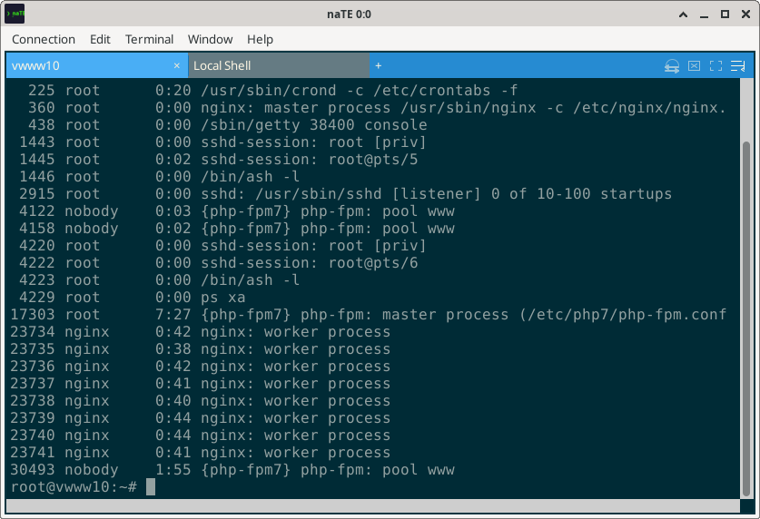
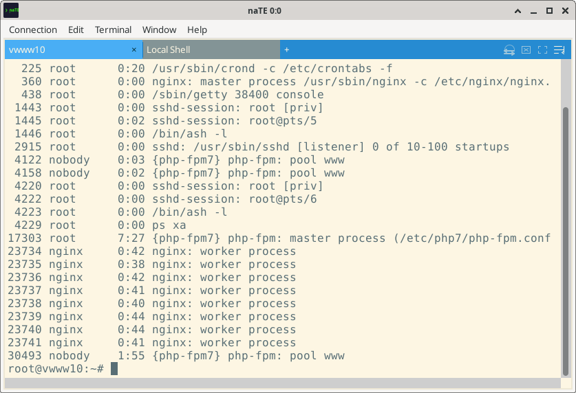
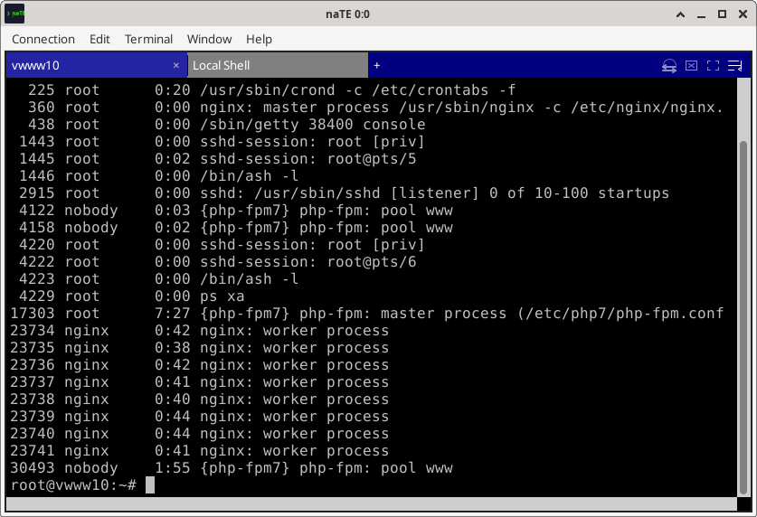
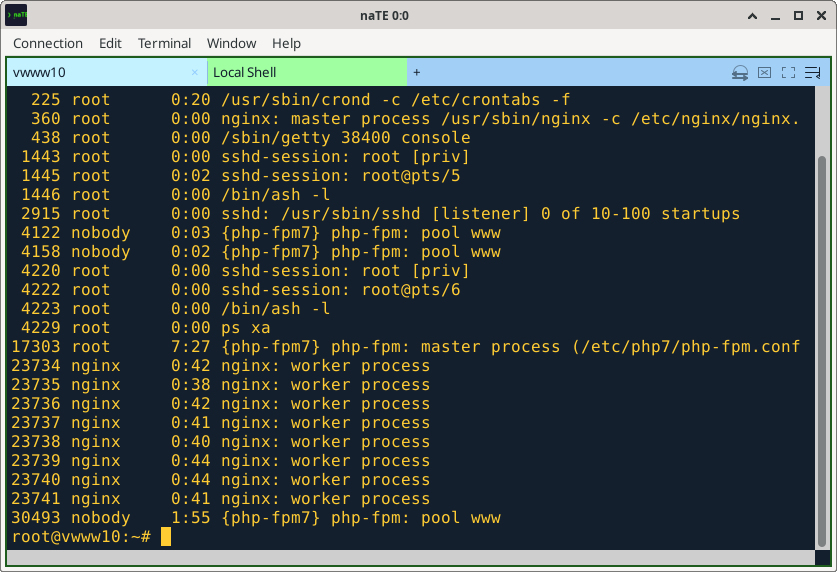

Appearance & Themes
Customize fonts, colors, cursor behavior, and load any base16 theme.
Appearance Preferences
Open Edit → Preferences → Appearance to access all appearance settings.
| Setting | Description | Default |
|---|---|---|
| Theme | Active color scheme name | solarized-dark |
| Font family | Monospace font for the terminal canvas | System default |
| Font size | Point size | 12 |
| Cell padding | Extra inset around the terminal canvas, in pixels | 4 |
| Cursor style | Block, Bar, or Underline | Block |
| Cursor blink | Animate the cursor | Off |
| Tile layout | Row First or Column First — global default for new windows | Row First |
| Geometry presets | Reusable terminal sizes (columns × rows) offered when creating connections; add, edit, or remove entries | 80×24, 132×24, 110×24, 120×24 |
Built-in Themes
naTE ships with three themes:



Custom Themes
Drop a theme file into ~/.nate/themes/ and it will appear in the theme selector next time naTE starts (or immediately after reloading the preferences dialog).
base16 YAML format (recommended)
naTE supports the base16 scheme format. Over 250 community themes are available in that repository — just download the .yaml file and drop it in ~/.nate/themes/.
A minimal base16 YAML looks like this:
scheme: "My Theme"
author: "Your Name"
base00: "002b36"
base01: "073642"
base02: "586e75"
base03: "657b83"
base04: "839496"
base05: "93a1a1"
base06: "eee8d5"
base07: "fdf6e3"
base08: "dc322f"
base09: "cb4b16"
base0A: "b58900"
base0B: "859900"
base0C: "2aa198"
base0D: "268bd2"
base0E: "d33682"
base0F: "6c71c4"All hex values are 6-digit RGB without the # prefix. Both the flat v0.x format (shown above) and the newer v2 format with a palette: block are supported.
naTE INI format
For compatibility, naTE also reads its own INI-based theme format:
[Theme]
name = My Custom Theme
[Palette]
; base16 slots 00–0F
base00 = 002b36
base01 = 073642
; … etc
[ANSI]
; Or define the 16 ANSI colors directly
color0 = 073642
color1 = dc322f
; … etcWhere to find themes: The tinted-theming/base16-schemes repository on GitHub has 250+ ready-to-use YAML theme files. Popular ones include Gruvbox, Nord, One Dark, Tokyo Night, Monokai, and Dracula.

~/.nate/themes/How Themes Work
naTE themes use the base16 convention of 16 named "base" slots — not a direct ANSI palette. This allows themes to drive both the terminal colors and the UI chrome (title bars, tabs, buttons) from a single coherent palette.
| Slot | Typical use |
|---|---|
base00 | Default background |
base01 | Lighter background (status bars, line numbers) |
base02 | Selection background |
base03 | Comments, invisible characters |
base04 | Dark foreground (status bars) |
base05 | Default foreground, cursor color |
base06 | Light foreground |
base07 | Lightest foreground (used in light themes) |
base08 | ANSI red (variables, tags, errors) |
base09 | ANSI orange (integers, booleans) |
base0A | ANSI yellow (classes, constants) |
base0B | ANSI green (strings) |
base0C | ANSI cyan (regex, escape sequences) |
base0D | ANSI blue (functions, methods) |
base0E | ANSI magenta (keywords) |
base0F | ANSI bright variants |
The 16 ANSI terminal colors (color 0–15) are derived from these base slots, and the UI chrome colors (title bar, tab strip, buttons, selection highlights) are also derived from the same palette. Switching a theme changes everything in one step.
Cursor Style
Three cursor shapes are available:
- Block — a solid filled rectangle covering the character cell (classic terminal cursor)
- Bar — a vertical bar on the left edge of the cell (common in text editors)
- Underline — a horizontal bar below the character
Applications can also request a cursor style change via VT sequences — naTE respects those requests during a session. The configured default applies when a new session starts and when the terminal is reset.
Cursor blink
Enable or disable the cursor blink animation in Edit → Preferences → Appearance. Blink uses a 500ms on/off timer. The application can request blinking via escape sequences as well.
Bell Mode
Configure what happens when a program rings the terminal bell (^G):
- None — bell is silently ignored
- Visual (default) — the terminal canvas briefly flashes
- Audible — plays the system bell sound
Set in Edit → Preferences → Behavior → Bell mode.
Fonts
Use any monospace font installed on your system. A good monospace font makes the terminal far more comfortable for long sessions.
Recommended fonts
- JetBrains Mono — excellent readability, good ligature support
- Fira Code — popular in developer circles, nice ligatures
- Cascadia Code — Microsoft's open-source terminal font
- Hack — designed specifically for source code and terminals
- Inconsolata — clean and lightweight
Wide characters: naTE handles East Asian Wide and CJK characters correctly — they occupy two terminal cells and are drawn individually rather than batched, preventing font-advance drift. If you use a font without CJK glyphs, the system will substitute an appropriate fallback font for those characters.
Changing font mid-session
You can change the font for the active tile at any time via Terminal → Set Font. This is a session-level override — the global default in Preferences is not changed.